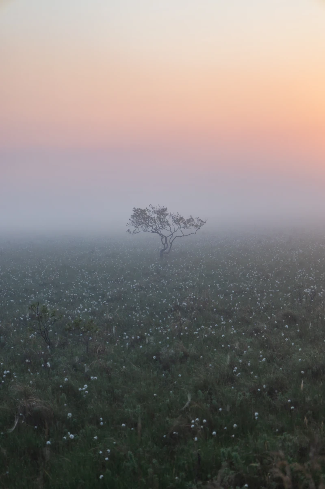
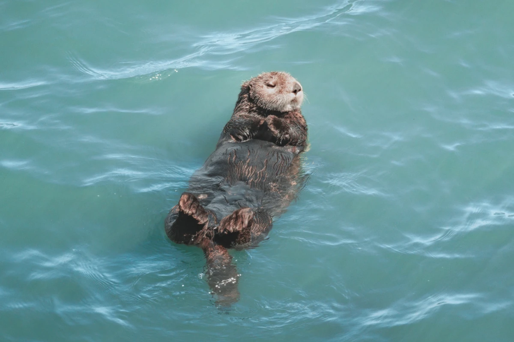

ABOUT HAMANAKA PHOTO
写真から、
浜中町とつながる。
見る。知る。訪れる。撮る。伝える。
HAMANAKA PHOTOは、写真を入口に浜中町との出会いをつなぐフォトポータルです。
WHAT IS HAMANAKA PHOTO?
一枚の写真から、
町との出会いをつくる。
浜中町には、野生のラッコをはじめ、太平洋、霧多布湿原、野鳥、 酪農風景、漁港など、ここでしか出会えない景色があります。
HAMANAKA PHOTOでは、それらの魅力を写真で見せるだけではなく、 「どこで撮れるのか」「どうやって訪れるのか」「どんなルールを守るのか」までを一つにつなぎます。
写真を見て終わるのではなく、浜中町を知り、実際に訪れ、 自分の視点で撮り、その魅力を次の誰かへ伝えていく。 そんな循環を育てることを目指しています。
PHOTO JOURNEY
写真から始まる、5つのステップ。
HAMANAKA PHOTOのコンテンツは、町との出会いが次の行動につながるようにつくられています。
- 01見る
写真から浜中町の景色や生きものに出会う。
- 02知る
町の自然、暮らし、撮影の魅力を知る。
- 03訪れる
アクセスや準備を確認して、実際に浜中町へ。
- 04撮る
ルールを守りながら、自分の視点で景色を残す。
- 05伝える
撮った写真や体験を通して、次の人へ魅力をつなぐ。
CONTENTS
HAMANAKA PHOTOでできること。

INTRODUCTION
浜中町を知る
海、湿原、野生動物、暮らし。写真を撮る人の視点から浜中町を紹介します。
詳しく見る →
GALLERY
写真を見る
浜中町で撮影された作品から、季節や場所、生きものの表情に出会えます。
GALLERYを見る →
PHOTO GUIDE
撮りに行く
撮影スポット、旅の準備、機材、撮り方、ルールまで現地撮影に必要な情報をまとめています。
PHOTO GUIDEを見る →
PROJECT
写真の取り組みを知る
写真展、撮影会、フォトコンテストなど、写真を活用した浜中町の取り組みを紹介します。
PROJECTを見る →INFORMATION
運営・サイトについて。
運営
HAMANAKA PHOTOは、北海道浜中町が運営する写真ポータルサイトです。
写真・掲載内容について
掲載写真や文章の無断転載・無断使用はお控えください。各写真の権利関係は掲載情報をご確認ください。
掲載情報について
撮影地・交通・施設・ルール等は変更される場合があります。訪問前に最新の公式情報もご確認ください。